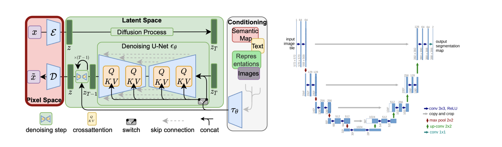
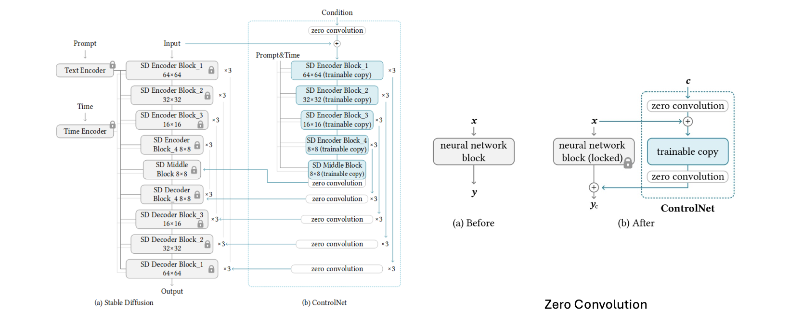
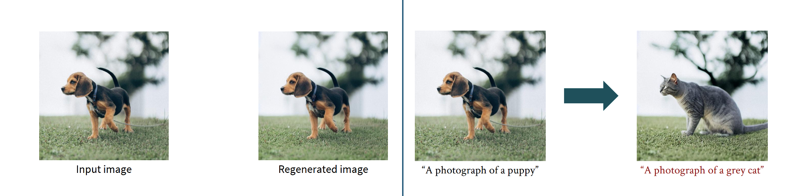
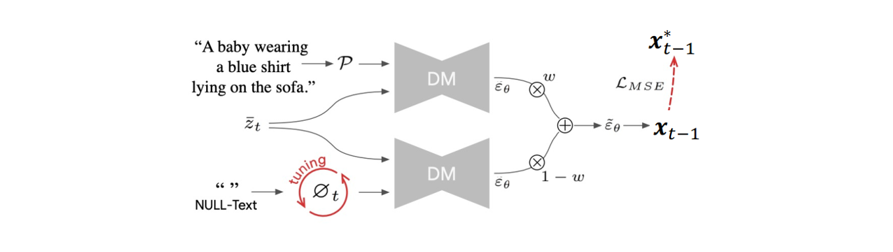

6. Conditional Diffusion Methods#
Conditional diffusion models extend standard diffusion models by incorporating external conditioning information such as text, class labels, images, audio, or poses. This additional input guides the generation process, enabling controlled and task-specific outputs.
Classifier Guidance#
In classifier guidance, the diffusion model is steered using an auxiliary classifier trained to predict the class label \(y\) from the noisy input \(x_t\). Given the joint distribution:
The standard noise prediction:
Using standard noise prediction, the score function of this distribution becomes:
The adjusted noise term with classifier guidance is:
A classifier network \(p_\phi(y|x_t)\) estimates \(p(y|x_t)\) and its gradient \(\nabla_{x_t} \log p(y|x_t)\) with respect to \(x_t\). The updated noise prediction is as follows:
The strength of the classifier guidance can be controlled by adding a weight parameter \(\omega\ge1\):
So, \(p_\phi(x_t)p_\phi(y|x_t)^\omega\) is used in place of \(p_\phi(x_t)p_\phi(y|x_t)\). The term \(p_\phi(y|x_t)^\omega\) amplifies large values, which make the network focus more on the modes of the classifier. This results in higher fidelity to input labels but less diversity. Classifier guidance provide improved generation quality using labels, but at the expense of training an additional classifier.
Classifier-Free Guidance (CFG)#
Classifier-free guidance eliminates the need for a separate classifier by training a single noise prediction model that handles both conditional and unconditional generation. The noise prediction network is modified to take the condition (label) \(y\) as an additional input.
A network is trained jointly for conditional and unconditional input by introducing a null symbol \(\phi\).
The impact of the conditioning can be enhanced by extrapolating the conditional noise: \(\hat{\epsilon}_\theta(x_t,y,t)\) from the null-condition noise \(\hat{\epsilon}_\theta(x_t,\phi,t)\):
Connection to classifier guidance#
If \(\lambda:=1+\omega\), then
It is equivalent to the condition enhancement in Classifier Guidance. Pros and cons:
Easy to implement. Versatile as not only labels but any additional information can be used.
The noise predictor needs to be evaluated twice in the generation process. \end{itemize}
Negative prompt#
CFG can also enable negative prompting:
where \(y_+\) and \(y_-\) are positive and negative prompts.
Latent Diffusion Models#
One of the typical issues with diffusion models is the size/resolution of the input data. Higher dimensional data require higher compute, making the training and inference slow. To reduce computational costs, latent diffusion models operate in a lower-dimensional latent space rather than directly on high-dimensional image data. The noise prediction U-Net is applied to this latent representation, with cross-attention used to incorporate conditioning information.

Query (\(Q\)): output of each U-net layer.\ Key \(K\) and Value \(V\): output of the input condition encoder.
ControlNet#
ControlNet enables conditional generation by fine-tuning only the conditional encoding pathway:
The pre-trained noise prediction network is frozen.
For encoding of the conditional image, a copy the pre-trained encoder parameters is used, which are allowed to be updated during finetuning.
The encoded conditional image information is combined with the noisy image using zero convolution.

Zero Convolution \(Z\) is a 1 × 1 convolution layer with learnable weight (scaling) parameters \(a\) and bias (offset) parameters \(b\), both of which are initialized with zero.
where c is the condition image. In the beginning \(\theta_c=\theta\) and \(a_i, b_i=0\). Zero convolution helps in gradually incorporating the conditional information with the original noisy image.
Lora#
The Controlnet based network benefits from a special training scheme, where parameters are updated using a low-rank condition on the weights. A bottleneck architecture is used where the intermediate outputs are reduced in dimensionality by representing weight matrices as a product of a low rank matrices.
DDIM Deterministic Sampling#
if \(\sigma_t = 0\), for all t in DDIM,
Compute \(x_{0|t} = \frac{1}{\sqrt{\bar{\alpha}_t}}( x_t - \sqrt{1-\bar{\alpha}_t} \hat\epsilon_\theta(x_t,t))\)
Compute \(x_{t-1} = \sqrt{\bar{\alpha}_{t-1}} x_{0|t} + \sqrt{1-\bar{\alpha}_{t-1}} \hat\epsilon_\theta(x_t,t)\)
DDIM Inversion#
For deterministic sampling, the mapping from \(x_T\) to \(x_0\) is fixed. Then, how can we also compute the inverse mapping from \(x_0\) to \(x_T\)? For the forward process with small time intervals, approximate \((x_{t+1}-x_t)\) by simply replacing \((t-1)\) with \((t+1)\) in the \((x_{t-1}-x_t)\) formulation.
Inversion fails when the number of time steps is too small (when the time intervals are too large).
Image Editing Using DDIM Inversion#
DDIM inversion helps when the generation of an image is based on existing images while preserving important information. Image editing applications are a good candidate for such techniques. Typically,
DDIM inversion is performed using the original prompt in CFG.
which is then followed by a reverse processing using a new prompt in CFG.

Good image editing can be achieved by using a high CFG weight for both inversion and generation.
However, inversion tends to fail when CFG weight \(\omega\) is high.
Null-Text Inversion#
To address some issues related to inversion with high CFG weight, in null-text inversion, first inversion is performed with \(\omega = 1\). Let the latent variables \(\{x_t^*\}_{t=1,....T}\) be pivots, followed by an inversion with \(\omega >>1\) while enforcing the latent variable \(x_t\) to be close to the corresponding latent variable \(x_t^*\) while tuning some parameters.
With \(x_{t-1}(x_t,c,\phi)\) indicating the computation of \(x_{t-1}\) from \(x_t\), input prompt \(c\), and null prompt \(\phi\), minimize

Summary#
Method |
Extra Classifier |
Conditioning Type |
Pros |
Cons |
|---|---|---|---|---|
Classifier Guidance |
Yes |
Label only |
High fidelity, strong control |
Requires separate classifier |
Classifier-Free Guidance |
No |
Any (text, image) |
Simple, flexible, versatile |
Double forward passes needed |
ControlNet |
No (tuned encoder) |
Image (pose, edge) |
Explicit spatial control, reusable |
Increased model size/training |
Latent Diffusion |
No |
Any |
Efficient memory/computation |
Loss of some detail in latent space |
DDIM Inversion |
No |
Any |
Image editing & regeneration |
Inversion difficult for small steps or high CFG |
Reference#
Ho, Jonathan, and Tim Salimans. “Classifier-free diffusion guidance.” arXiv preprint arXiv:2207.125 (2022).
Zhang, Lvmin, Anyi Rao, and Maneesh Agrawala. “Adding conditional control to text-to-image diffusion models.” Proceedings of the IEEE/CVF international conference on computer vision. 2023.
Dhariwal, Prafulla, and Alexander Nichol. “Diffusion models beat gans on image synthesis.” Advances in neural information processing systems 34 (2021): 8780-8794.
Rombach, Robin, et al. “High-resolution image synthesis with latent diffusion models.” Proceedings of the IEEE/CVF conference on computer vision and pattern recognition. 2022.